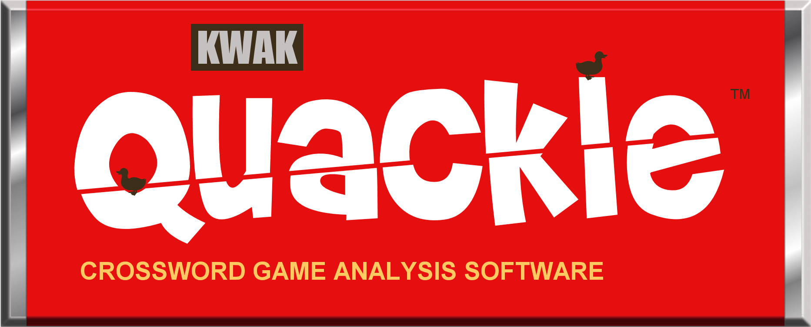

Quackle: The T-Shirt!

Quackle: The T-Shirt! |
|||
|
|||
Yay for her amaaazing candy bar.
Delish.
Many thanks to the NINE engagers of the Quackle T-Shirt Design Contest! Woohoo, what outturning. Click on each name to see the complete set of all designs submitted by these fantastic superpimp people, arranged in alphabetical order by third letter of first name:
We'll be selling the shirts in Toronto if their production goes according to plan and will also offer a way to buy them online. Thanks again for the hard work and everybody's ongoing support!
There were so many designs that we liked so much that we hope to make many designs of T-Shirts in the future and also use the graphics to make Quackle's webpage suck less. I can't believe how awesome the Quackle fanbase is that so many (9! wow!) would spend so much time outcraftying# this collection of awesomeness. Thank you.
Copyright (C) 2005-2012 Jason Katz-Brown and John O'Laughlin.